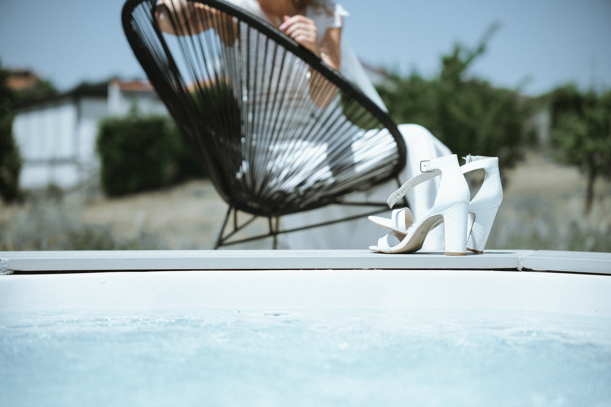
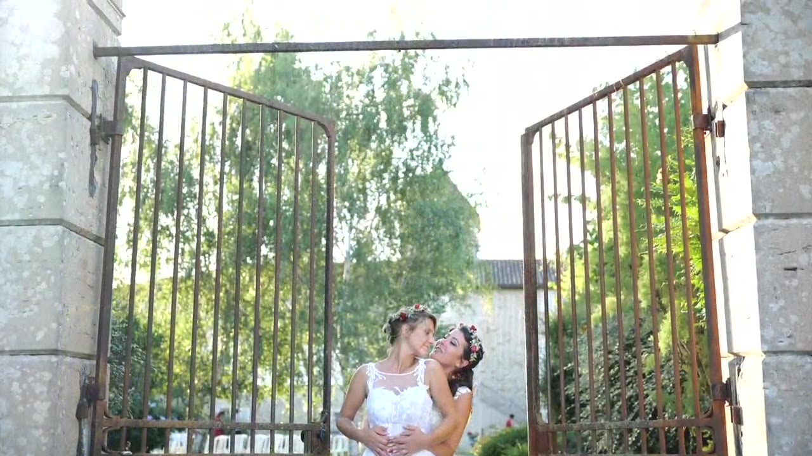
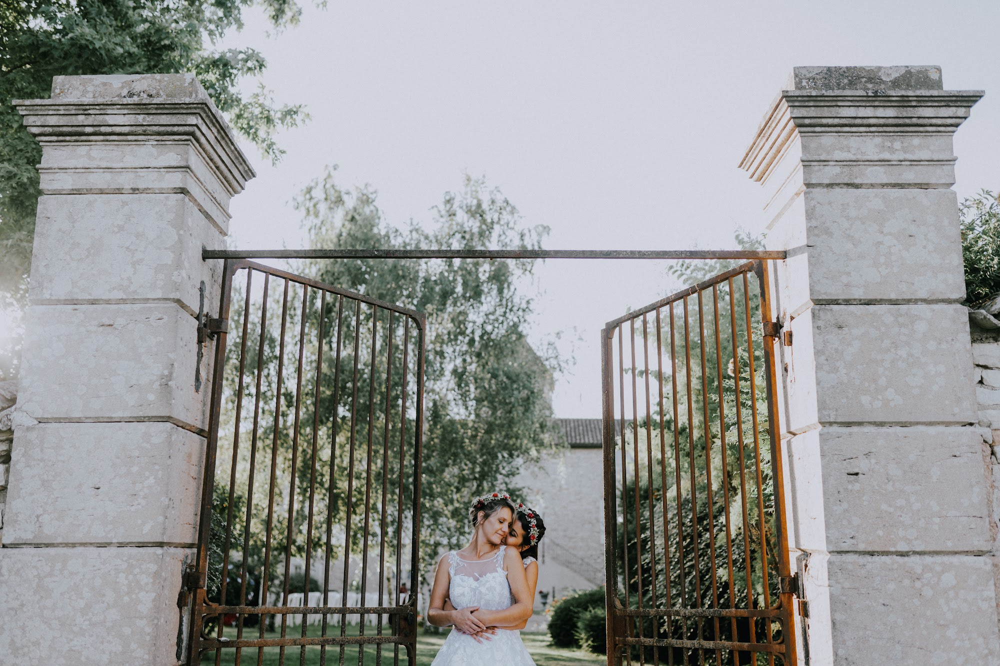
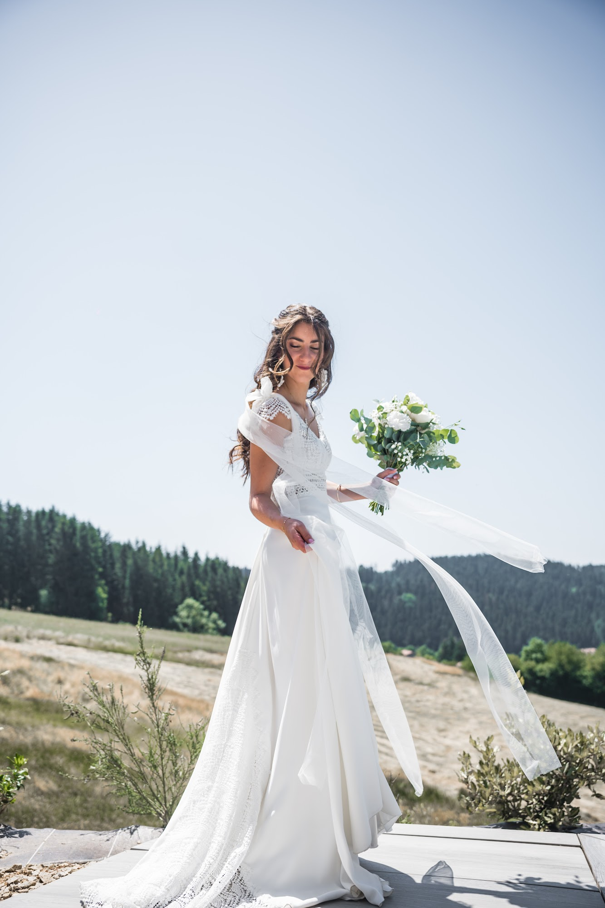
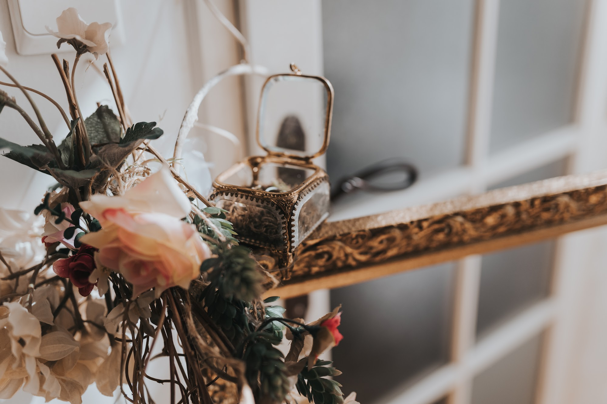
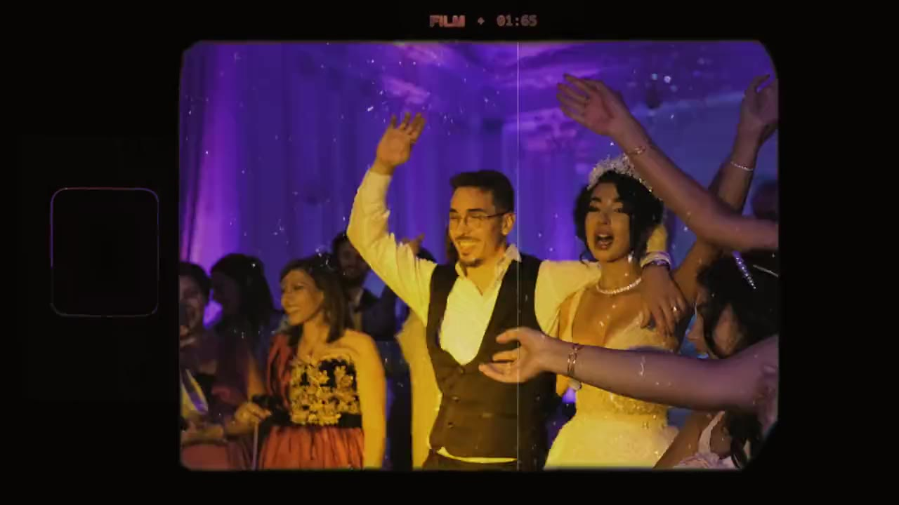

Trouver le lieu de mariage idéal à Lyon : châteaux, domaines et lacs
La recherche d'un lieu de mariage à Lyon marque souvent le point de départ concret de vos préparatifs. C'est le décor qui donnera le ton à votre journée, la lumière qui enveloppera vos invités, l'atmosphère de vos images. En tant que photographe et vidéaste, je vois comment un espace influence l'énergie d'une réception et la fluidité des moments partagés.

L'élégance intemporelle : choisir un château pour un mariage en Rhône-Alpes
L'histoire résonne souvent entre les murs épais des grandes demeures de notre région. Choisir un château pour un mariage en Rhône-Alpes, c'est opter pour une élégance qui traverse le temps. J'aime particulièrement le contraste entre l'architecture classique, avec ses hauts plafonds et ses moulures, et l'énergie très vivante d'une journée de fête. Les grandes fenêtres de ces bâtisses laissent entrer une lumière directionnelle douce, parfaite pour les heures calmes des préparatifs.
Les cours d'honneur offrent un cadre naturel et majestueux pour accueillir vos invités au moment du cocktail. Le bruit des pas sur le gravier, le vent dans les arbres centenaires de la propriété, tout participe à créer une atmosphère apaisante. Les espaces y sont vastes, ce qui permet à chacun de trouver sa place sans jamais se sentir à l'étroit. En soirée, la façade éclairée devient une toile de fond somptueuse pour quelques portraits nocturnes.

L'authenticité de la pierre : le charme d'un domaine de mariage près de Lyon
Si vous cherchez un esprit plus brut et chaleureux, la pierre apparente et les charpentes en bois massif ont beaucoup d'allure. Un domaine de mariage près de Lyon se fond souvent dans le paysage rural, au bout d'une allée bordée d'arbres ou au sommet d'une colline des Monts d'Or. Ces lieux respirent la convivialité et la simplicité. Les anciennes granges rénovées proposent des volumes généreux sous plafond, avec une acoustique chaleureuse pour le dîner.
C'est le genre de cadre qui invite à la décontraction la plus totale. Les invités déambulent facilement entre la cour intérieure et les jardins arborés. En fin de journée, la pierre capte la chaleur du soleil et restitue une lueur très flatteuse pour les portraits de couple. Je vous guide à travers ces espaces de manière fluide, en utilisant les textures naturelles du bois et du minéral comme toile de fond pour vos images.

Entre vignes et collines : organiser un mariage dans le Beaujolais

Plus au nord, les paysages vallonnés offrent une respiration immense. Organiser un mariage dans le Beaujolais permet de profiter de cette fameuse pierre dorée qui caractérise si bien la région. C'est un minéral qui s'embrase littéralement lors de la fameuse golden hour, cette heure qui précède le coucher du soleil. Les domaines viticoles disposent souvent de grandes terrasses dominant les vignes, offrant une vue dégagée qui donne une belle sensation de liberté.
L'ambiance y est épicurienne, profondément ancrée dans la terre et le partage. Les longues tablées en extérieur y trouvent naturellement leur place lors des chaudes soirées d'été. C'est un environnement qui appelle au mouvement, aux rires spontanés et aux verres qui tintent sous les guirlandes lumineuses. Le vent jouant avec le tissu de vos tenues au milieu des rangs de vigne crée un dynamisme que j'adore filmer et photographier.
L'appel de l'eau : les bords de lac entre Ain et Savoie
L'eau apporte une dimension très différente à une réception. Les régions de l'Isère, de la Savoie et de la Haute-Savoie abritent des joyaux les pieds dans l'eau. Se marier près du lac d'Annecy ou du Bourget change totalement le rythme de la journée. La lumière rebondit sur la surface de l'eau, créant des reflets changeants tout au long de l'après-midi. L'atmosphère devient presque suspendue, bercée par le clapotis des vagues contre les pontons de bois.
Une courte escapade en bateau permet parfois de s'isoler quelques instants, loin de l'effervescence de la réception. Ces lieux demandent une certaine souplesse avec la météo, car les nuages s'accrochent vite aux montagnes environnantes. Ils offrent en retour des ciels d'une intensité dramatique que j'affectionne tout particulièrement pour des portraits poétiques et texturés.

L'importance de la lumière naturelle dans vos espaces
La configuration des espaces extérieurs mérite toute votre attention lors des repérages. La réussite visuelle d'un cocktail repose beaucoup sur la présence de zones ombragées. Un soleil de plomb en milieu d'après-midi crée des ombres dures sur les visages et fatigue rapidement vos invités. Les grands arbres centenaires ou les voiles d'ombrage tendues sont vos meilleurs alliés pour garantir le confort de chacun.
À l'intérieur, la taille et l'orientation des fenêtres influencent directement l'atmosphère de votre repas. Une salle très sombre demandera un travail d'éclairage spécifique avec de nombreuses bougies ou des faisceaux chaleureux pour exister en image. Une pièce baignée de lumière naturelle prolongera la sensation de fin de journée. J'étudie toujours la course du soleil et la disposition des ouvertures lors de mes repérages pour anticiper ces variations de lumière.

Penser son lieu de mariage à Lyon pour la soirée et la fête
Le lieu idéal sait aussi se transformer à la tombée de la nuit. La transition entre le dîner et la piste de danse doit se faire naturellement, sans casser la dynamique de la soirée. Les domaines qui proposent une belle hauteur sous plafond ou des murs en pierre sombre créent un écrin parfait pour la fête. La lumière artificielle prend alors le relais pour habiller l'espace.
J'aime jouer avec les clairs-obscurs, les silhouettes de vos amis qui se détachent sur les lumières colorées de la piste. Un bon lieu de réception propose une acoustique maîtrisée, où la musique enveloppe les danseurs sans assourdir ceux qui préfèrent discuter au bar. Cette séparation subtile des espaces permet à toutes les générations de profiter pleinement de la fin de soirée.

La géographie et la fluidité de votre journée
La fluidité de votre emploi du temps dépend de la proximité des différents espaces. Limiter les temps de trajet entre le lieu de vos préparatifs, la mairie ou la cérémonie laïque, et le domaine de réception préserve votre énergie. Moins vous passez de temps en voiture, plus vous profitez concrètement de vos proches et de l'instant présent.
Les lieux qui proposent des chambres sur place offrent un confort immense. Vous pouvez vous préparer sur le domaine dans le calme, redescendre simplement les escaliers pour accueillir vos invités, et savoir que vos amis les plus proches dormiront à quelques pas de la piste de danse. C'est une tranquillité d'esprit logistique qui se ressent immédiatement sur votre attitude tout au long de la journée.
Questions fréquentes
Quand réserver son lieu de mariage autour de Lyon ?
Les espaces les plus prisés se remplissent rapidement. Je vous conseille de commencer vos visites environ douze à dix-huit mois avant la date souhaitée. Cela vous laisse le temps de comparer les atmosphères sans agir dans l'urgence.
Quels sont les critères pour choisir un domaine de mariage près de Lyon ?
Concentrez-vous sur la cohérence avec votre vision de la journée. Observez la présence d'espaces ombragés pour le cocktail, la luminosité de la salle de réception et l'acoustique pour la soirée. La possibilité de loger vos proches sur place est aussi un atout majeur pour la fluidité de l'événement.
Peut-on trouver un château pour un mariage en Rhône-Alpes avec hébergement ?
De nombreuses propriétés historiques ont rénové leurs dépendances pour accueillir des invités à dormir. Ces hébergements sur place facilitent l'organisation et prolongent la convivialité jusqu'au lendemain matin. Demandez toujours la capacité exacte de couchages lors de votre première visite.
Combien de temps prévoir pour les photos de couple sur le lieu de réception ?
Vingt à trente minutes suffisent amplement si l'on choisit le bon moment. J'aime vous isoler brièvement pendant le cocktail, quand la lumière devient plus rasante et chaleureuse. Cela vous permet de souffler à deux sans déserter votre propre fête.
Faut-il prévoir un plan B en cas de pluie sur le lieu de mariage ?
C'est une nécessité absolue pour garder l'esprit serein jusqu'au jour J. Assurez-vous que le domaine ou le château dispose d'une belle solution de repli en intérieur. Une grange lumineuse ou une grande verrière offre un cadre superbe pour une cérémonie ou un cocktail à l'abri des gouttes.
Vous avez trouvé le lieu de vos rêves et vous cherchez un regard discret pour documenter cette journée ? Parlons de votre projet.
Parlons de votre projet